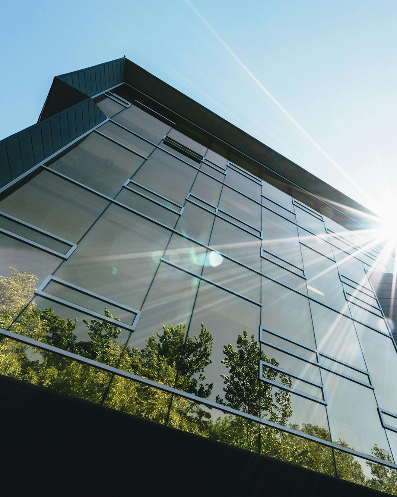
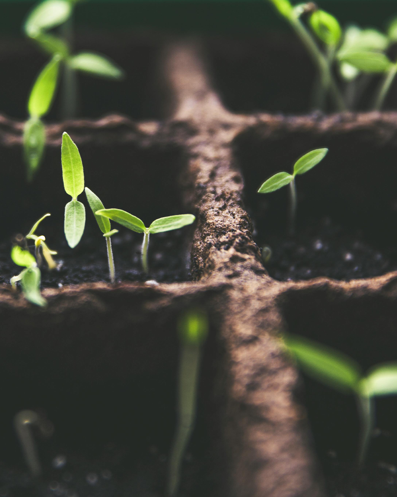
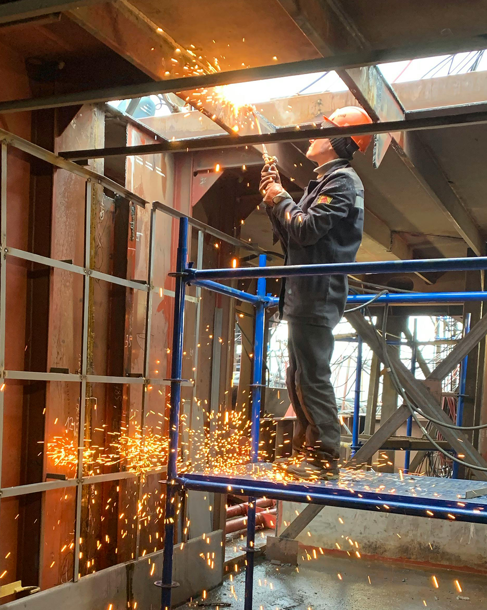
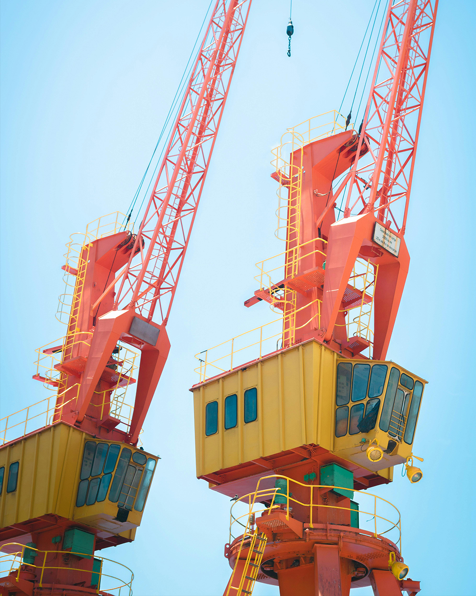

Sustainability
- End-to-end design of attractive sustainability communication and sustainability
reports (via SDGs, GRI, Sustatool) for multiple purposes - Establishing and aligning sustainability objectives with strategic goals
- CSRD and EU-Taxonomy proofing
- Calculating CO2-footprint according to SBTI or CO2-prestatieladder
- CO2-reduction plans, Full support for Ecovadis audits
Strategy & Growth
- Adjust value proposition (operational excellence customer intimacy,
product leadership and people driven). - Develop strategy concerning diversification, vertical integration and
innovative business models (e.g. as a service, circularity, etc.). - Identify specific growing pains and risks (e.g. via ERM)
- Organisational redesign and coaching.
- Identify applicable growth model and learn to control and understand
the development from there.


People & Organisation
-
Drawing up an integral strategic HR policy, starting from the human capital
and values of the company. - Specific coaching of teams and executives around culture, behaviour and values
(e.g. construction teams). - Improving cooperation between departments and within teams.
- Growth plans and internal training centre (company academy)
Operational excellence.
-
Making companies and organisations smarter and more efficient, increasing margins
and employee satisfaction.
- Improve customer satisfaction and overall service levels
- Improving cooperation between departments and within teams.
- Growth plans and internal training centre (company academy)
